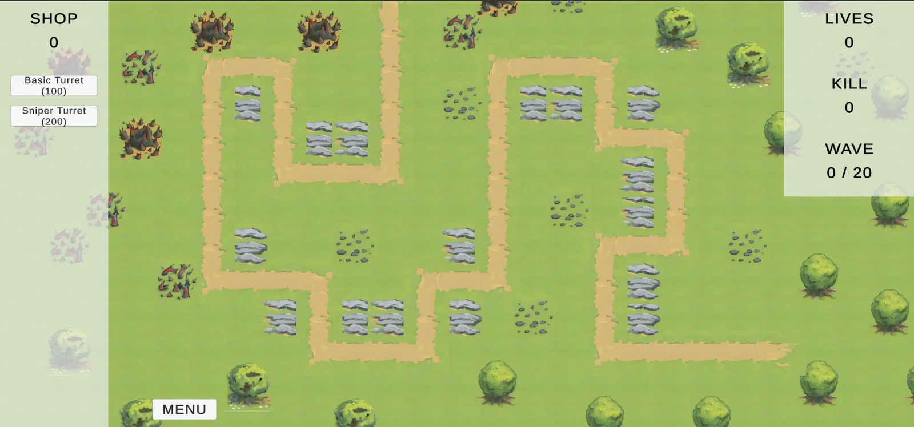
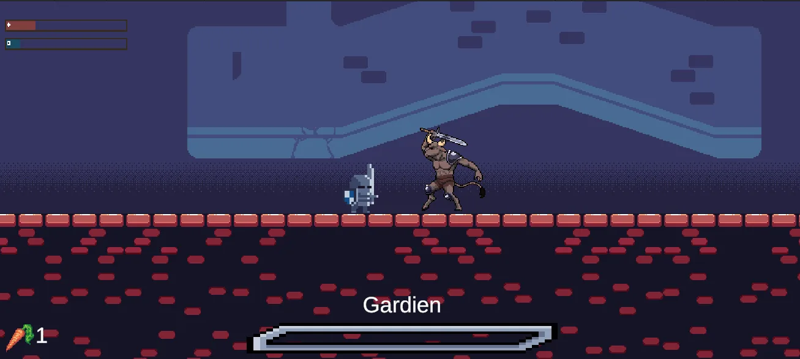
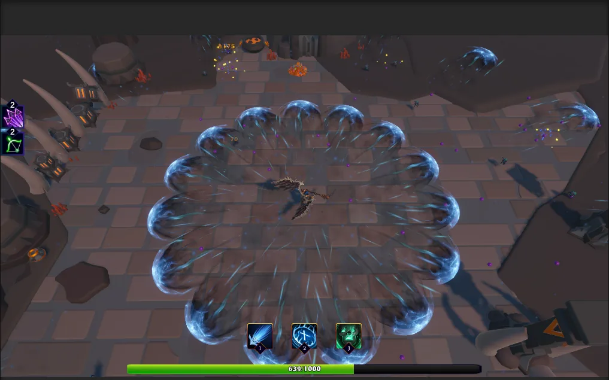
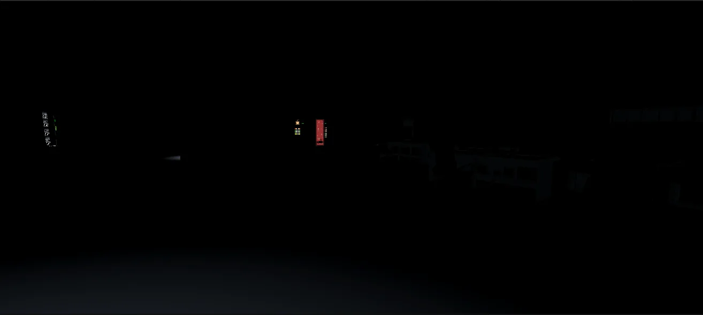
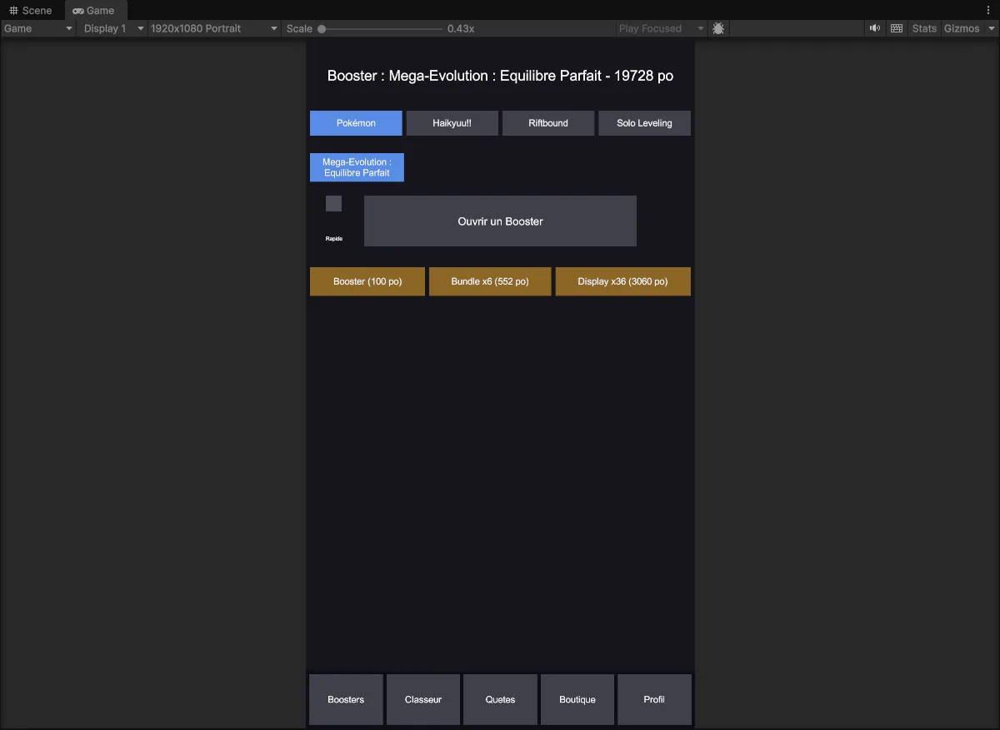

Passionné par le développement de jeux vidéo, je suis actuellement étudiant en première année de master en Game Programming. Mon objectif est de devenir développeur de jeux, et je me forme activement avec des moteurs reconnus comme Unreal Engine et Unity.
En tant qu'étudiant en informatique chez Ynov, je me consacre pleinement à l'apprentissage et à la maîtrise des technologies liées au développement de jeux. Mon parcours académique et mes projets personnels me permettent de développer de solides compétences en programmation et en création interactive.

Jeu de défense stratégique développé sous Unity 2D. Défendez votre château en plaçant des tours tactiquement contre des vagues d'ennemis aux caractéristiques variées et évolutives.

Jeu d'action 2D en pixel art où vous incarnez un lapin affrontant des ennemis et des boss épiques. Projet étudiant mêlant stratégie, combat et exploration à travers divers cartes.

Jeu de survie coopératif développé sous Unity 3D. Affrontez des vagues infinies de monstres avec jusqu'à 3 joueurs, choisissez votre classe et améliorez vos compétences pour survivre le plus longtemps possible.

Jeu d'horreur psychologique solo développé sous Unity 3D. Évoluez dans un bureau plongé dans les ténèbres et survivez à l'obscurité pour trouver votre seule échappatoire.

Application Unity solo pour ouvrir des boosters de cartes à collectionner virtuelles. Constituez votre collection sur plusieurs licences et échangez vos doublons avec vos amis.